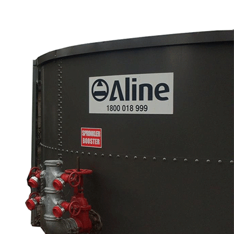
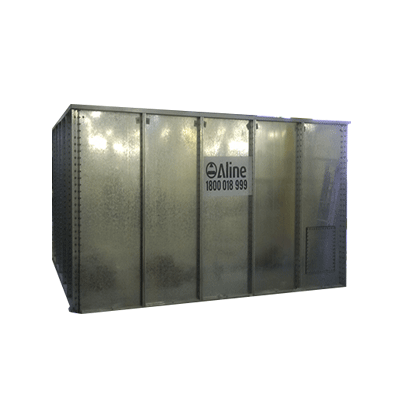

What Are the Different Water Tank Shapes and Which Is Right for You?
/wp:heading wp:paragraphWater tanks come in various shapes—most commonly round and square—to suit different space, capacity, and design requirements. Choosing the right water tank shape is crucial for efficient water storage, especially in fire protection systems, agriculture, and confined environments. Each shape offers unique benefits in terms of strength, space efficiency, and water flow performance.
/wp:paragraph wp:paragraphKey Takeaways:
/wp:paragraph wp:list {"ordered":true}- wp:list-item
- Round water tanks are cost-effective, structurally stronger, and promote better water flow and temperature control. /wp:list-item wp:list-item
- Square water tanks fit neatly into tight or indoor spaces but may have lower hydraulic efficiency due to flat corners. /wp:list-item wp:list-item
- Your tank shape choice should be based on your available space, usage needs, and installation location—whether above ground, underground, or inside confined facilities. /wp:list-item
What is a Fire Water Tank
/wp:heading wp:paragraphUsed to ensure fire safety in facilities and environments that may pose fire hazards, fire water tanks provide direct control of water to extinguish a fire in a timely manner. These tanks hold their own water, provide a pump to move the water and hose for when the water is needed. Modern fire water storage tanks can hold 2000L or more. Similar to standard water tanks which hold water for irrigation agriculture, agricultural farming and more, a fire water tank’s difference is that it is always fitted with a hose.
/wp:paragraph wp:headingRound Fire Water Tanks
/wp:heading wp:columnswp:column
wp:image {"lightbox":{"enabled":false},"id":3007,"width":"360px","height":"auto","sizeSlug":"full","linkDestination":"custom"}

wp:paragraph {"align":"left"}
Round water tanks are a versatile addition to your facility for a myriad of reasons. With a circular shaped water tank, water can only occur in a circular motion, allowing the liquid to be funnelled down to the bottom without any restrictions. This means debris remains in the centre of the tank and not at the top or the bottom. Although a round fire water tank takes up less ratio of circumference, it can take up more space as it doesn’t always fit perfectly or neatly into a space.
/wp:paragraph /wp:column /wp:columns wp:paragraphA round fire water tank also requires less building material than a square shaped tank, meaning it can be more economical to build. Without any weak spots, a round tank can be stronger than square tanks without the need for added reinforcement. Keeping a constant temperature, round tanks minimize heat and have better temperature control so they lose less heat in winter and gain more in summer. Being somewhat more aesthetically pleasing, a round tank is also easier to clean because you usually have full access to all areas of the tank.
/wp:paragraph wp:headingSquare Fire Water Tanks
/wp:heading wp:columnswp:column
wp:image {"lightbox":{"enabled":false},"id":3045,"width":"363px","height":"auto","sizeSlug":"full","linkDestination":"custom"}

wp:paragraph
Rectangular or square-shaped can be more suitable for smaller spaces or places where you need an exactly fitted fire water tank. This shape is ideal for underground facilities or spaces that do not have an outdoor area, such as wine cellars. Unlike round tanks, square tanks do not allow liquid to flow in a circular motion so they can often leave leftover water in the unit. This doesn’t utilise the tank’s full water capacity. With flat ends and a smaller overall footprint, a square tank is ideal for smaller spaces for a perfectly measured fit.
/wp:paragraph /wp:column /wp:columns wp:headingContact Aline Pumps
/wp:heading wp:paragraphOverall, there are advantages and disadvantages of both square and round water tanks. Depending on your project requirements, it will depend on which one you opt for. With customised fire water tanks, ideal for an array of project needs, Aline has your needs sorted. Contact us today for a quote and how we can assist your facility’s safety today.
/wp:paragraph